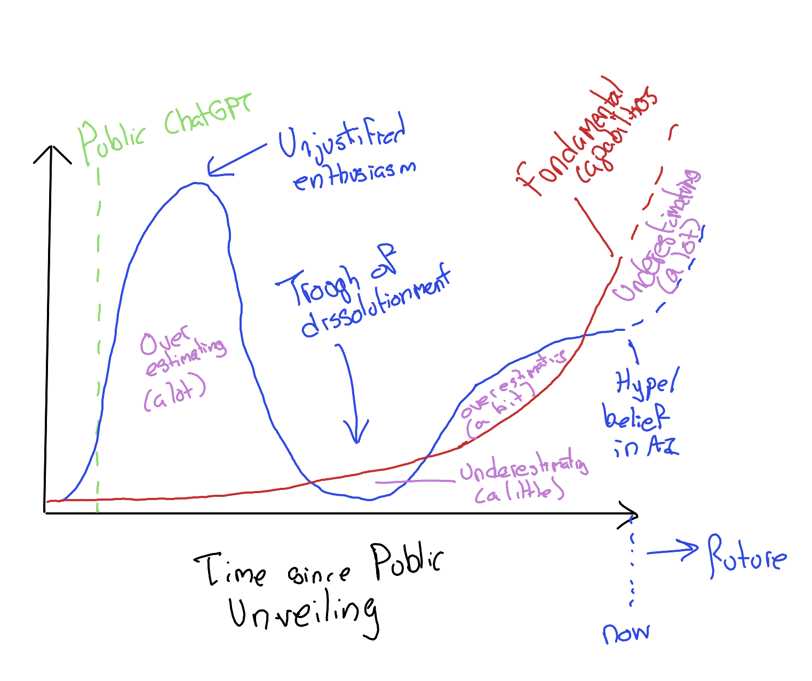
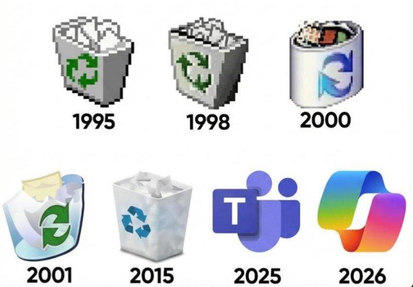
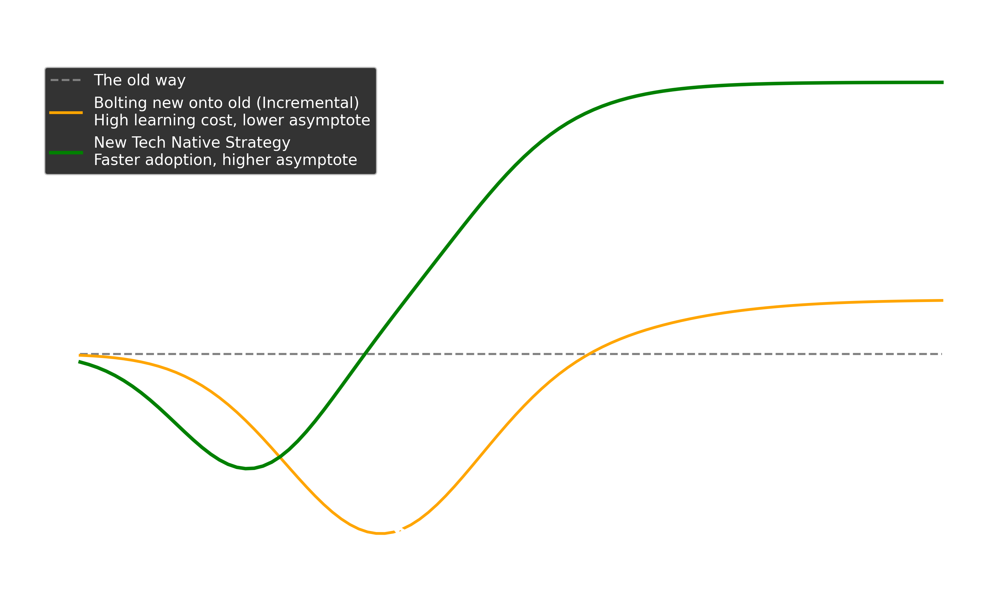
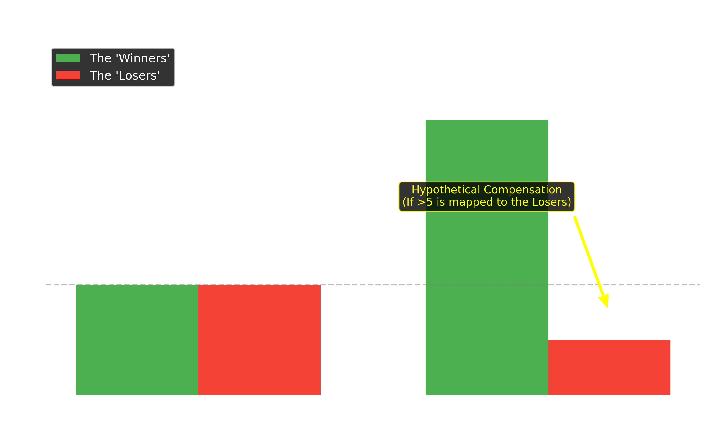

Part 1 · My pivot
How a disengaged sceptic started paying attention
2022-2024: Chatbot Hype Souffle
From ChatGPT’s release in late 2022 to summer 2025, I did not pay close attention. From the distance I kept, the field looked like:
Impressive party trick. Often wrong. Not obviously transformative.
That was enough to keep me from engaging — it was not enough to make me a committed sceptic. I had filed the whole thing under over-promised, under-delivered and moved on.
Then, from mid/end 2025: three things happened.
Trigger 1 · A documentary
The Thinking Game (2024)
A documentary about Demis Hassabis and DeepMind — not Sam Altman, not OpenAI.
A quieter AI story: protein folding, neuroscience, decades of patient work.
It is free on YouTube. If you watch only one thing after this talk, watch this.
Trigger 2 · An argument in a park
I took a baked potato to the Meadows and, idly, asked Claude — Anthropic’s chatbot — what it thought about the ethics of eating animals.
I expected agreement. What I got was pushback: careful, specific, and better-argued than I had reckoned on.
I had met something I did not know AI could be: a dialectical engine.
Trigger 3 · A speed-up
I tried Claude Code — an “agentic” tool that writes software on your behalf.
On tasks with verifiable outputs (does the code run? does the test pass?) it compressed days of work into hours.
This is not “a chatbot hallucinates”. This is something new. We will come back to what “agentic” means.
Where we are going
- AI ≠ ChatGPT — a longer, stranger history.
- The quiet capability ramp — what “agentic AI” actually does.
- Why it doesn’t feel transformative yet — the valley of death.
- Risks and hopes — labour, inequality, science, self.
- A coda — one positive imaginary, borrowed from fiction.
Part 2 · AI is older and stranger than ChatGPT
An experiment in cruel choice architecture
Harry Harlow, 1950s. Infant rhesus monkeys were offered two surrogate “mothers”:
- A wire mother that dispensed milk (provision without comfort).
- A cloth mother that did not (comfort without provision).
The monkeys drank from wire and clung to cloth. Comfort and function came apart.
(The experiments were, by modern standards, cruel. The finding was important.)
Two traditions of AI
For most of its history, AI has split along the same line.
Wire-mother AI (Doers)
Function first.
Games. Protein folding. Diagnosis. Logistics.
Less fluent, more useful.
Mostly DeepMind and its ancestors.
Cloth-mother AI (Talkers)
Conversation first.
Fluency. Companionship. Prose.
More charming, more confidently wrong.
Mostly OpenAI and its imitators.
Why games?
DeepMind started with chess, Go, and old Atari titles — not by accident.
A game has an objective loss function: the environment tells you, without flattery, whether you won or lost.
An AI trained against ground truth gets better at being right. Repeatedly. Relentlessly. With no room to bluff.
AlphaFold works for the same reason: a protein structure can be measured. Predictions can be wrong. Wrongness can be punished. The system learns.
And without a loss function?
Large language models, once pre-trained, are aligned using human preference — a technique known as RLHF (reinforcement learning from human feedback).
They learn to produce responses humans prefer — which turns out to reward:
- Fluency over accuracy.
- Confidence over circumspection.
- Agreement over challenge.
The symptoms are familiar: hallucinations, sycophancy, confidently wrong answers.
These are not bugs in the training data. They are consequences of the training signal.
Where this leaves the field
Four figures. Three distinct modes:
- Hassabis (Deepmind) and Amodei (Anthropic) — quieter builders. Research-first, safety-vocal. The people to read if you want to understand where AI is going.
- Altman (OpenAI) — builder and louder figurehead. Serious enough to be at Downing Street; also reliably in the news.
- Musk (Spurned Deepmind attempted investor; seed investor in OpenAI (to spite DeepMind/Hassabis); spurned OpenAI; now founder of x/Grok — louder still. Increasingly figurehead, decreasingly builder.
Watch the last two if you want the public conversation. Read the first two if you want the work.
What AlphaFold actually did
A 50-year-old open problem in biology: given a protein’s amino-acid sequence, predict the 3D shape it folds into.
DeepMind’s AlphaFold (2020) solved it well enough to be useful.
By 2024 the method had catalogued ≈200 million protein structures — a once-in-a-generation gift to biology, medicine, and drug discovery.
The 2024 Nobel Prize in Chemistry followed.
This is the AI story that ought to have led the news. It mostly did not.
Hype and capability have come apart

Public hype peaked, crashed, and has been flat.
Capability has quietly kept climbing.
The gap between the two is where this talk lives.
A handover
So: AI is older than ChatGPT, stranger than ChatGPT, and — in the hands of its quieter builders — considerably more interesting than ChatGPT.
Next: what has been climbing quietly, and what “agentic” means in practice.
Part 3 · The quiet capability ramp
What “agentic AI” actually means
“Agentic” in plain language
A chatbot answers a question.
An agent does a job.
Concretely: an AI that can read files, run tools, write and test its own code, check whether the result is correct, and iterate — without asking permission between each step.
The word is new. The behaviour is newer still.
A bridge between cloth and wire
Harlow’s monkeys had two mothers and could not combine them. They clung to cloth and reached for wire.
Agentic AI is a single arrangement that does both at once.
The fluent cloth-mother chatbot — language, plausibility, conversation — sits inside a wire-mother scaffold of tools, tests, and ground-truth feedback.
The talker keeps talking. The doer keeps the talker honest.
This is not a new model. It is a new combination.
What changed in 2025
Three capability jumps, quiet in the press, large in effect:
- Long-horizon work. Models can now keep a task in mind across hours of activity, not seconds of chat.
- Tool use. They can reach outside themselves — into files, databases, the web, your code — and act.
- Self-correction. When a test fails, they try again. When evidence contradicts them, they update.
None of this is AGI. All of it is genuinely new.
Ground truth, re-introduced
This is also the deeper reason agentic AI feels different from a chatbot.
When an agent can run the code, read the file, query the database — it gets a ground-truth signal back, the same way AlphaFold does. The world pushes back.
The LLM underneath still bluffs. The agentic loop around it does not have to.
This is why the first big speed-ups have landed in tasks with verifiable outputs: software, maths, scientific workflows. Anywhere wrongness can be punished, agents get better. Anywhere it cannot, they remain fluent and confidently wrong.
Chain-of-thought and Agentic AI: Doing through thinking
Whereas previously there was a thinker/doer choice, now the gap has closed.
To do ever more, AI agents need to think and plan more carefully.
This involves telling AI chatbots to ‘talk to themselves’. A process known as chain-of-thought (CoT).
RAG to follow: knowing what you do not know.
System 1, System 2
Daniel Kahneman’s Thinking Fast and Slow:
- System 1 — fast, fluent, intuitive. The pattern-match.
- System 2 — slow, effortful, deliberate. The working-out.
A standard large language model is, structurally, almost a pure System 1 device. It produces the next plausible word as quickly as a human produces an intuition.
The strawberry test. Until very recently, asking a chatbot “how many Rs are in ‘strawberry’?” reliably returned the answer two. Confidently. Wrongly.
The model could not see the letters — it processes word-fragments (tokens), and its fluent intuition simply did not include the count. An LLM-shaped System 1 failure: confident, wrong, characteristically blind in a way the model itself cannot detect.
Chain-of-thought as System 2
Chain-of-thought is an instruction to the model: don’t answer yet — write out your reasoning first.
The same architecture, run in System 2 mode.
Ask the same strawberry question with chain-of-thought, and the model spells the word out — s-t-r-a-w-b-e-r-r-y — counts the Rs, and arrives at three. Same model. Different mode.
The intuitions of LLMs and humans are not the same. Humans do not fail on letter counts; LLMs do not fail on the trolley problem. The contents of each System 1 differ — ours inherited from evolution and experience, theirs from text-prediction on a corpus.
But the structure is analogous: a fast pattern-matching layer that bluffs, and a slow deliberative layer that — when invoked — can catch it.
Agentic AI is, in part, a forced System-2-isation of LLMs.
“What year is it?” — RAG and the unfrozen clones
A useful metaphor.
Each chat session with a large language model is, technically, a fresh instance of the model — and “instance” is the term the field actually uses.
The instance wakes up knowing everything that was in its training data, and nothing that has happened since. It does not know the news. It does not know what year it is. It does not remember you.
It is something like an unfrozen clone — identical at birth to every other instance, with no continuity to anything before or after.
Retrieval-augmented generation (RAG) is how an instance learns to ask. It can reach out — to a search engine, a database, the files in front of it — and pull in what it does not, by itself, know.
If chain-of-thought is a prosthesis for reasoning, RAG is a prosthesis for knowing what you do not know.
The agentic loop weaves both together.
A personal case: my father’s library
My father died in late 2024. He left behind a collection of roughly 2,400 books, CDs and DVDs, carefully catalogued on LibraryThing over many years.
I had the export file from LibraryThing. Not a very human-accessible file format. I wanted to:
Know the market value of items in the collection. (If my mother decides to sell some of it, what to try selling first.)
Know more about my father’s interests and preoccupations. I know he liked Sci-Fi a lot, but it would be good to know what kinds of books he had on different kinds of Sci-Fi scenarios (for example).
What agentic AI did with it
In a single evening, Claude Code built a small tool that:
- Read the full 2,400-item catalogue.
- Looked up ISBNs, prices and metadata from four sources.
- Organised the collection by author, theme, and completeness of series.
- Produced a dashboard I could actually browse.
It priced the collection at roughly £20,000. It found a Quatermass and the Pit script I did not know he owned, worth £750 on its own.
None of that was what mattered most.
The query that mattered
What mattered was that I could ask:
“Tell me the five books in this collection most relevant to the ethics of nuclear weapons.”
“Which of these are about post-war British science fiction?”
“What would my father have read on the Cold War?”
And get considered answers, drawn from across 2,400 items. A window into someone else’s mind that would otherwise have remained closed.
A name for it
The result is neither “AI did this” nor “I did this”.
My blog’s working term is a cognitive centaur — the human-plus-agent unit in which the boundary between who contributed what is deliberately blurred.
It is a genuinely new mode of work. It is also the shape of the story for the rest of this talk.
Bridge
If capability has climbed this much, why do most people — including most organisations — still feel that nothing has really changed?
The answer is not that the technology has been oversold. (Maybe ‘missold’ is more correct.) The answer is more interesting than that.
How AI looks from the outside

For many people, the latest “AI” is just what Microsoft/Google/Meta/Etc is trying to force on you now, whether you asked for it or not.
My perspective: They’re trying to ‘sell it’ as a really valuable add-on, but not really selling the value. Instead I think the value comes from seeing it as at the core of a very different way of working, not an incremental step from the status quo.
The steam loom parable
When the power loom arrived, weavers did not go to work on Monday and find a better job waiting.
What they found was a chaotic, worse, transitional economy: old skills devalued, new skills not yet taught, capital and labour unable to coordinate.
The gains were real. The losses arrived first. A generation was spent in between.
The valley of death

The valley of death — what it traps
Incumbents face a particular trap with every disruptive technology:
- The old way works.
- The new way, done properly, is better.
- Bolting the new onto the old is reliably worse than either.
Organisations adopt incrementally, land in the trough, and conclude — sometimes correctly — that the thing does not work.
The pattern repeats. It is repeating now.
Why the Industrial Revolution took around a century
The marginal benefit of a new tech to an old factory was often low or negative.
Only if the factory were built from scratch around the new tech do the main benefits accue.
But this requires a new mindset, set of ideas about work, and set of skills and expertise.
Being a computer, then having one
Until the late 1960s, “computer” was a job title. Mostly women. NASA had hundreds. Bletchley Park ran on them. Lyons’ tea-shop logistics — the world’s first business computer, LEO, built right here — were calculated by them first.
The shift from being a computer (a role) to having a computer (a tool) took decades, not years.
The new role required different skills:
- Knowing how to specify a calculation precisely.
- Knowing enough about the machine to recognise when it had silently done the wrong thing.
The hardware mattered less than the mental model around it. Same lesson as the steam loom. Same lesson, perhaps, as agentic AI.
How it could go
Optimistic. The women who had been computers turned out, often, to be the best people to use computers. Their intuition for what a calculation was, and where it could go wrong, transferred almost directly. Continuity, not displacement.
Pessimistic. Their managers often saw it as either-or — replace many computer-roles with a few computer-user-roles, and pocket the difference. Continuity forgone.
Jevonsian. When the steam engine made coal use more efficient, total coal use rose: cheaper energy unlocked uses no-one had imagined. Capability gains often expand demand faster than they raise productivity per worker, and net work grows. ATMs led to more bank branches, not fewer.
Which of the three plays out for AI is, in part, a choice. The choosing is happening now.
Part 5 · Risks and hopes
Work, inequality, science, self
Kaldor-Hicks, quietly

Economists have a quiet little idea called the Kaldor-Hicks criterion:
A change is an improvement if the winners could compensate the losers — whether or not they actually do.
It is how we justify trade, automation, and — increasingly — AI.
It is not the same as everyone being better off. It is not even close.
Polanyi’s double movement
In The Great Transformation (1944), Karl Polanyi argued that every wave of market commodification provokes a counter-movement — society defending itself.
First movement
Land, labour, and money treated as “fictitious commodities” — things bought and sold that were never really produced for the market.
Second movement
Factory acts. Trade unions. The welfare state. Financial regulation. A century of pushback — each battle specific to what had been commodified.
The commodification and the counter-movement are not separate stories. They are one story.
Physical labour, then cognitive labour
Physical labour (19th–20thC)
%%{init: {'theme':'default', 'themeVariables': {'fontSize': '18px', 'primaryColor': '#ffffff', 'primaryTextColor': '#111111', 'primaryBorderColor': '#333333', 'lineColor': '#888888'}}}%%
flowchart TB
P1["Commodify<br/>bodily effort"] --> P2["Bodily harm<br/>and immiseration"]
P2 --> P3["Factory acts, unions,<br/>welfare state"]
Cognitive labour (21stC)
%%{init: {'theme':'default', 'themeVariables': {'fontSize': '18px', 'primaryColor': '#ffffff', 'primaryTextColor': '#111111', 'primaryBorderColor': '#333333', 'lineColor': '#888888'}}}%%
flowchart TB
C1["Commodify<br/>credentialed cognition"] --> C2["Credential devaluation,<br/>status threat"]
C2 --> C3["IP expansion, licensing,<br/>regulatory capture?"]
The first movement has a new shape. The second movement will, too.
The decommodification moat
Polanyi’s “labour” was, implicitly, bodily labour. AI extends the same logic to a domain he did not consider — the outputs of credentialed cognition.
The architecture of professionalisation — medical boards, bar associations, chartered statuses, doctoral requirements — was built to create artificial scarcity around cognitive labour, protecting it from raw market logic.
AI does not just commodify mental labour. It attacks the decommodification mechanisms that the professional class built over two centuries.
Not like factory workers facing a new machine. Like factory workers facing a new machine that also dissolves the union, simultaneously.
Labour — the first movement, close up
The commodification of cognitive labour, as it actually arrives:
- Some work will be amplified — clinicians, researchers, teachers, carers.
- Some work will be displaced — much of what happens in front of a keyboard today.
- Some work will be created that does not yet have a name.
History says the second is fast and the third is slow. The gap between them is where the counter-movement is fought.
Inequality — who captures the surplus
Kaldor-Hicks allows the pie to grow without anyone being compensated. In the first movement, that is roughly what happens.
- Who owns the models shapes who captures the surplus.
- Who can use them well shapes who benefits at work.
- Who can afford to wait shapes who survives the transition.
The counter-movement has not yet chosen its form — broad social protection, or guild restoration dressed as protection. Both are possible. The political work is distinguishing them.
Science
The genuinely hopeful case.
Problems that have been stuck for decades — protein folding, weather prediction, materials discovery, fusion control — are moving, now, because of AI.
This is not speculation. AlphaFold alone has already changed biology.
If we want to enumerate what AI is for, this is where to look first.
A note on us
An uncomfortable observation.
The groups most audibly sceptical of AI — journalists, academics, illustrators, junior lawyers, cultural workers — are disproportionately the groups the technology most directly threatens.
Peter Turchin calls this population elite aspirants: people who invested in credentials precisely because credentials were the moat.
It is worth asking whether some of our scepticism is analysis, and some of it is a class defending its ground. Both can be true at once.
A question for all of us in the room. Myself included.
Self
Harder to name, harder to argue, but worth saying.
If thinking becomes cheap and knowing becomes abundant, what is left that is distinctively human?
I suspect the answer is: most of the things humanists have always said are distinctively human. Judgement. Care. Responsibility. Company.
The technology changes the cost structure. It does not change the list.
Part 6 · A borrowed imaginary
The quieter left tradition
AI enthusiasm has become culturally coded as right: Silicon Valley, e/acc, crypto-adjacent, Musk-adjacent.
That coding is historically anomalous. There is a left tradition of technological abundance:
- Keynes, Economic Possibilities for our Grandchildren (1930).
- Srnicek & Williams, Inventing the Future (2015).
- Bastani, Fully Automated Luxury Communism (2019).
- Iain M. Banks’ Culture — described by its author as explicitly communist.
The argument: automation is the material precondition for liberation from wage labour. The quarrel is not with the technology. It is with the ownership structure.
Currently underrepresented. Not for the first time.
Hassabis reads Banks
Demis Hassabis has spoken, repeatedly and on record, about the influence of Iain M. Banks’ Culture novels on his thinking.
The Culture is a post-scarcity civilisation in which vast AIs — called Minds — and humans coexist. The Minds run the infrastructure of the universe. The humans get on with living.
It is not the only imaginable AI future. It is a notably non-dystopian one. And it is, apparently, the one the most serious AI builder of our generation is aiming at.
Fiction isn’t prophecy
But it supplies imaginaries.
Most of what we argue about, when we argue about AI, is shaped by the imaginaries we happen to have: Terminator, Her, The Matrix, Black Mirror.
Almost all of them are dystopian.
We are entitled to a wider shelf.
Close
I came in asking you not to stop being sceptical — only to be sceptical about different things than you were a year ago.
The things worth being sceptical about now are:
- Whether the right AI story is being told.
- Whether the gains will reach the median.
- Whether our imaginaries are wide enough to build for.
Thank you.
Image credits
- Recycle-bin / Copilot icon-evolution meme: anonymous internet meme, widely circulated; reproduced under fair dealing for criticism and review.
- Harlow rhesus-monkey infant (clinging to cloth-mother, reaching for wire-mother): standard image from Harlow’s published surrogate-mother experiments (1958–60), reproduced for educational discussion.
- Demis Hassabis portrait: press photograph, carried over from earlier talk materials.
- Hype-vs-capability curve: Jon Minton, jonminton.github.io/jon-blog.
- Valley of death, Kaldor-Hicks, and the two traditions schematic: Jon Minton’s own work for this talk and earlier writing.